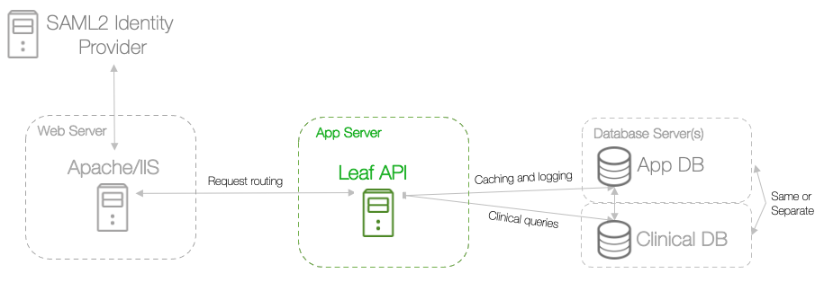

7 - Set Environment Variables¶

Leaf uses environment variables to store sensitive information, such as connection strings, which are loaded when the API is launched. Regardless of the OS and configuration, as a best practice we recommend using environment variables specific to the user account running the Leaf API (rather than global environment variables).
Leaf environment variables with example values:
# Required
LEAF_JWT_CERT = /var/opt/leafapi/.keys/cert.pem
LEAF_JWT_KEY = /var/opt/leafapi/.keys/leaf.pfx
LEAF_JWT_KEY_PW = <your_pass>
LEAF_APP_DB = <leaf_app_db_connection_string>
LEAF_CLIN_DB = <clinical_db_connection_string>
SERILOG_DIR = /var/log/leaf/
ASPNETCORE_URLS = http://0.0.0.0:5001 # Only if using Linux
# Optional
LEAF_REDCAP_SUPERTOKEN = <your_token> # Only if using REDCap import/export
LEAF_SMTP_USR = <smtp_user> # Only if auto-generating help emails
LEAF_SMTP_PW = <smtp_password> # Only if auto-generating help emails
GOOGLE_APPLICATION_CREDENTIALS # Only if using Google BigQuery
SQL Connection string formatting
In most cases, the LEAF_APP_DB and LEAF_CLIN_DB environment variables should be similar to:
Server=<server>;Database=<dbname>;uid=sa;Password=<dbpassword>;
Though the particulars will depend on your database vendor.
If you are using BigQuery, the LEAF_CLIN_DB variable should instead be your BigQuery ProjectId.
If using Linux we recommend:
- Using full paths when referencing locations on the filesystem.
- Storing environment variables in a
.conffile.
In IIS environment variables are typically defined as configuration items in your backing application in IIS itself:


As IIS deployment is handled in Step 8b - Configure IIS with Leaf, you can wait to set environment variables until IIS configuration is complete.
The next step will depend on whether you are using Apache or IIS for deploying Leaf: